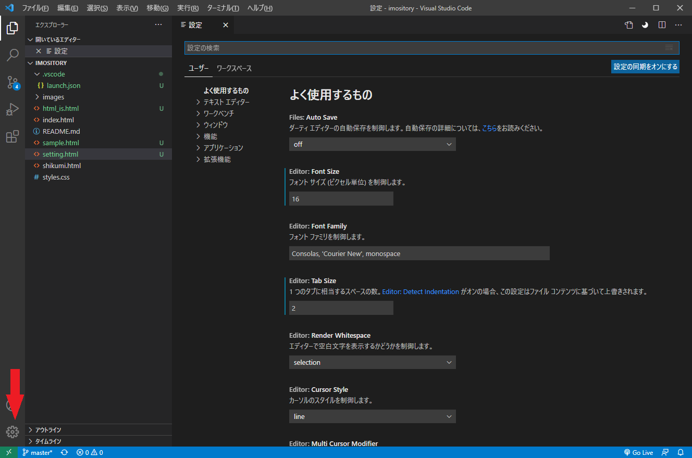
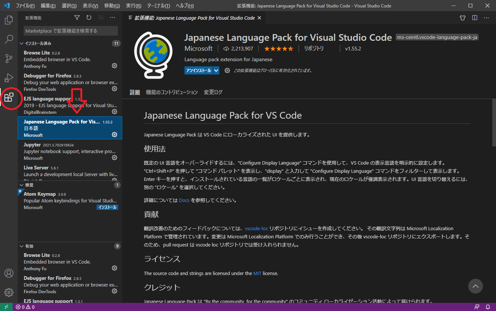

Web作成（コーディング）にとりあえず必要なものは、ブラウザ（Firefox,Cromeなど）とコードを書くエディタがあれば大丈夫です。
エディタには様々ありますが、マイクロソフトのVisual Studio Codeを紹介します。リンクからダウンロードしてインストールしてください。
下の画像は、Visual Studio Codeで作業フォルダとファイルを開いたところです。
ここで注意点は、作業フォルダ（ルートフォルダ）を開くことです。「フォルダを開く」コマンドからフォルダを開いて作業します。
ファイルだけを開くのでもいいですが、「フォルダを開く」とウインドウの左側にエクスプローラーが表示されてファイルがすぐ編集できます。
※表示されたファイルはダブルクリックでタブが固定されて編集できます。
Visual Studio Codeは、設定画面と機能拡張で色々な設定ができるようになっています。
左下の管理アイコンから設定画面を表示し、フォントサイズやTabでのインデントを設定できます。
左側アイコン下の機能拡張からJapaneseで検索すると日本語用機能拡張がインストールできます。
※その他、入れておくと便利な機能拡張
Open in Browser・・・ボタンクリックでブラウザで表示を確認できます。
黒白配・・・ボタンクリックで白／黒テーマの切り替えができます。
エクスプローラーでファイル名の拡張子（xxx.html, xxx.png など）を表示させておくと、
ファイルの種類がすぐわかります。ファイル名を書くときも間違えずにすみます。